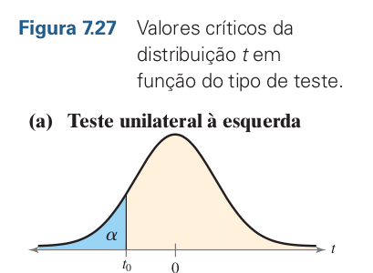
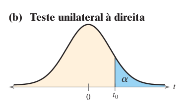
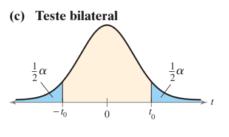
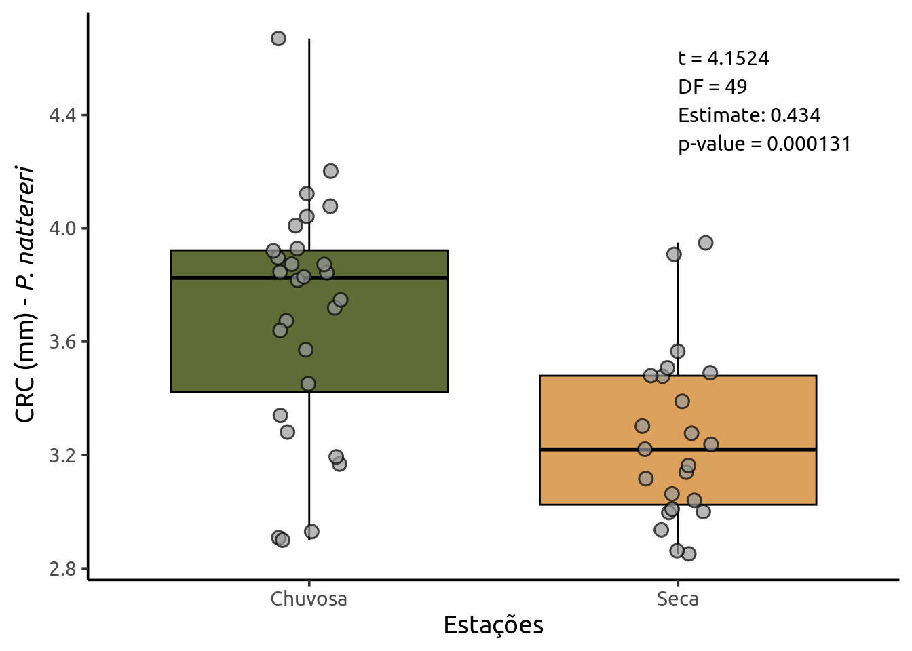

![]()
Registering fonts with RTeste t

O Teste \(\large t\) de Student foi proposto por William Sealy Gosset. O nome Student se deve ao fato de Gosset ser funcionário da cervejaria Guinness e utilizava o pseudônimo de Student em suas publicações. O teste \(t\) utiliza a distribuição \(t\), que pode ser imaginada com uma versão da distribuição normal para pequenas amostras. Gosset precisava desta alternativa para comparar experimentos na cervejaria, muitos com amostras pequenas. Gosset não tinha nenhuma intenção em causar impacto na estatística, seu teste buscava resolver uma questão prática e aplicada dentro da sua área de atuação. Seu teste entretanto é de enorme importância até hoje e destaca o quanto a significância de domínio (biológica, ecológica, econômica…) deve sempre preceder a significância estatística (Hector, 2021).
0.1 Qual Teste \(t\)?
Existem dois tipos de teste.
Para duas amostras independentes;
Para duas amostras pareadas.
No primeiro caso, nosso objetivo é comparar duas amostras obtidas de maneira independente. Por exemplo: massa foliar de plantas submetidas a dois tipos de tratamento, peso de camundongos alimentados com dietas com dois teores de proteína, etc.
No caso de amostras paredas, não temos independência pois desejamos medir o efeito sob um mesmo grupo de indivíduos/amostas. Por exemplo: comprimento do pelo de um grupo de Chinchilas antes e depois de submetidos a uma dieta, riqueza de espécies em uma área antes e depois de um episódio de queimada, etc.
Em cada caso, os testes necessitam obedecer a premissas que veremos mais em detalhes a seguir.
Outro aspecto importante diz respeito a como formulamos a Hipótese Nula (\(H_0\)) e em consequência a Hipótese Alternativa (\(H_a\)). Cada gráfico mostra uma curva de distribuição \(t\), e as áreas azuis \((\alpha)\) representam as regiões críticas onde rejeitamos a hipótese nula (\(H_0\)). Vamos ver cada um:

A área azul está à esquerda da curva.
Esse teste é usado quando queremos saber se a média é menor que um valor específico.
| \(\large H_0\) | \(\large H_a\) |
|---|---|
| \(\mu_1 \geq \mu_2\) | \(\mu_1 < \mu_2\) |
Rejeitamos \(H_0\) se o valor de \(t\) calculado cair na cauda esquerda da curva (menor que \(t_0\)).

A área azul está à direita da curva.
Esse teste é usado quando queremos saber se a média é maior que um valor específico.
| \(\large H_0\) | \(\large H_a\) |
|---|---|
| \(\mu_1 \leq \mu_2\) | \(\mu_1 \gt \mu_2\) |
Rejeitamos \(H_0\) se o valor de \(t\) calculado cair na cauda direita da curva (maior que \(t_0\)).

Agora há duas regiões críticas, uma em cada cauda (esquerda e direita).
Esse teste é usado quando queremos saber se a média é diferente, seja para mais ou para menos.
| \(\large H_0\) | \(\large H_a\) |
|---|---|
| \(\mu_1 = \mu_2\) | \(\mu_1 \neq \mu_2\) |
Rejeitamos \(H_0\) se o valor de \(t\) for muito pequeno ou muito grande (cair em qualquer uma das duas caudas).
O valor de \(\alpha\) (nível de significância) é dividido ao meio: metade em cada cauda.
Importante
Para as próximas etapas nesta sessão utilizaremos dados do pacote ecodados, vocês podem fazer a instalação rodando devtools::install_github("paternogbc/ecodados"). Este pacote é parte do excelente livro Análises Ecológicas no R de Da Silva et al. (2022) e é simplesmente um dos melhores livros dedicados a ciência de dados para Ecologia, disponível gratuitamente na internet. Obrigado aos autores mais uma vez!
0.2 Teste \(t\) independente
Um teste t baseado em duas amostras é usado para testar a diferença entre duas médias populacionais \(\mu_1\) e \(\mu_2\) quando \(\sigma_1\) e \(\sigma_2\) são desconhecidos, e portanto usamos os desvios amostrais.
\[t = \frac{\bar{x_1}-\bar{x_2}}{s}\sqrt{\frac{n_1\times n_2}{n_1 + n_2}}\]
Premissas do Teste \(t\):
- As amostras devem ser independentes
- As unidades amostrais são selecionadas aleatoriamente
- Distribuição normal (gaussiana) dos resíduos
- Homogeneidade da variância
0.3 Pacotes Necessários
car, ecodados, tidyverse
0.3.1 Exemplo 1
Usaremos os dados de comprimento rostro-cloacal (CRC) de machos de anfíbios da espécie Physalaemus nattereri (Anura:Leptodactylidae) amostrados em diferentes estações do ano.
Pergunta: Existe diferença na média co CRC em P. nattereri entre as estações?
Hipótese Nula: As médias de CRC são iguais.
Hipótese Alternativa: As médias de CRC são diferentes entre as estações.
Antes de realizarmos o teste \(t\), precisamos nos certificar de que nossos dados atendem as premissas.
Rows: 51
Columns: 2
$ CRC <dbl> 3.82, 3.57, 3.67, 3.72, 3.75, 3.83, 3.85, 3.87, 3.93, 4.01, 4.…
$ Estacao <chr> "Chuvosa", "Chuvosa", "Chuvosa", "Chuvosa", "Chuvosa", "Chuvos…QQ plot (Quantile-Quantile plot) é um gráfico que compara os quantis dos seus dados com os quantis de uma distribuição teórica (geralmente normal) para verificar se os dados seguem essa distribuição.
Para avaliar a normalidade dos resíduos podemos fazer visualmente através de um QQ-Plot.
Vamos falar em Regressão Linear em uma sessão futura, por enquanto saiba que estaremos utilizando um modelo super simples de \(CRC \sim Estação\) (CRC em função das Estações) e capturando os resíduos deste modelo para testar sua normalidade.
Os pontos se aproximam bastante da reta, o que nos sugere que nossos resíduos são normalmente distribuídos.
Podemos ainda utilizar o teste de Shapiro-Wilk e avaliar a normalidade e a heterocedasticidade (homogeneidade) da variância.
Shapiro-Wilk normality test
data: residuals(mod)
W = 0.98307, p-value = 0.6746Testando a variância com o teste de Levene
Warning in leveneTest.default(y = y, group = group, ...): group coerced to
factor.Levene's Test for Homogeneity of Variance (center = median)
Df F value Pr(>F)
group 1 1.1677 0.2852
49 A Hipótese nula de ambos os testes é a de que os resíduos apresentam distribuição normal (Shapiro-Wilk) ou a variância é homogênea (Levene). Portanto na hora de interpretar os p-valores:
\(\large p<0.05\): Rejeitamos \(H_0\), resíduos não seguem normalidade/homogeneidade de variância.
\(\large p>0.05\): Deixamos de rejeitar \(H_0\), resíduos são normais e variância é homogênea.
Uma vez satisfeitas as premissas, podemos prosseguir e realizar o teste \(t\):
Two Sample t-test
data: CRC by Estacao
t = 4.1524, df = 49, p-value = 0.000131
alternative hypothesis: true difference in means between group Chuvosa and group Seca is not equal to 0
95 percent confidence interval:
0.2242132 0.6447619
sample estimates:
mean in group Chuvosa mean in group Seca
3.695357 3.260870 Observe o argumento var.equal=TRUE, isso informa a função que nossa variância é homogênea. Isto é importante, pois em caso de variâncias não homogêneas há uma alteração no estimador utilizado para calcular a estatística \(t\).
Ao apresentar os seu resultados inclua:
A estatística \(t\): \(t = 4.1524\)
O p-valor: \(p-value = 0.000131\)
Graus de Liberdade: \(df = 49\)
Diferenca entre as médias: \(0.434\)
Usando a função tidy do pacote broom você pode montar uma tabela mais amigável com todos esses dados além de outros interessantes como intervalo de confiança.
library(gt)
options(scipen = 0)
labels <- c("Diferença Entre as Médias","Media_1","Media_2","Estatística t","p-valor","Gl","IC Inf","IC Sup")
broom::tidy(teste_T) |>
select(estimate:conf.high) |>
rename_all(~labels) |>
pivot_longer(everything(),values_to = "Valor",names_to = "Desc") |>
gt() |>
fmt_number(
columns = Valor,
decimals = 2,
rows = Desc != "p-valor" & Desc != "Gl"
) %>%
fmt_number(
columns = Valor,
decimals = 0,
rows = Desc == "Gl"
) %>%
cols_label(
Desc = "Descrição",
Valor = "Valor"
)| Descrição | Valor |
|---|---|
| Diferença Entre as Médias | 0.43 |
| Media_1 | 3.70 |
| Media_2 | 3.26 |
| Estatística t | 4.15 |
| p-valor | 0.0001310152 |
| Gl | 49 |
| IC Inf | 0.22 |
| IC Sup | 0.64 |
Outra opção é apresentar um gráfico de BoxPlot com as médias para cada estação e as observações.
extrafont::loadfonts(quiet = TRUE)
ggplot(data = crc_phy_nat, aes(x = Estacao, y = CRC, color = Estacao)) +
labs(x = "Estações",
y = expression(paste("CRC (mm) - ", italic("P. nattereri")))) +
geom_boxplot(fill = c("#606c38", "#dda15e"), color = "black",
outlier.shape = NA) +
geom_jitter(shape = 21, position = position_jitter(0.1),
cex = 3, alpha = 0.7, stroke = .8,
fill = "grey60") +
scale_color_manual(values = c("black", "black")) +
annotate("text",
label ="t = 4.1524",
size = 4,
x = "Seca",
y = 4.6,
hjust = 0,
family = "Ubuntu") +
annotate("text",
label ="DF = 49",
size = 4,
x = "Seca",
y = 4.5,
hjust = 0,
family = "Ubuntu") +
annotate("text",
label ="Estimate: 0.434",
size = 4,
x = "Seca",
y = 4.4,
hjust = 0,
family = "Ubuntu") +
annotate("text",
label ="p-value = 0.000131",
size = 4,
x = "Seca",
y = 4.3,
hjust = 0,
family = "Ubuntu") +
theme_classic(base_size = 14,
base_family = "Ubuntu") +
theme(legend.position = "none")
0.4 Teste \(t\) pareado
DA SILVA, F. R. et al. Análises ecológicas no r. [s.l.] Clube de Autores, 2022.
HECTOR, A. The new statistics with r: An introduction for biologists. [s.l.] Oxford University Press, 2021.
LARSON, R.; FARBER, B. Estatı́stica aplicada: Retratando o mundo. [s.l.] Bookman Editora, 2023.